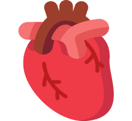
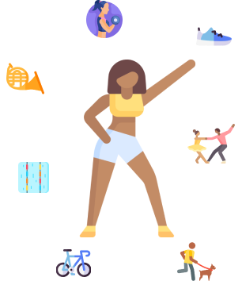
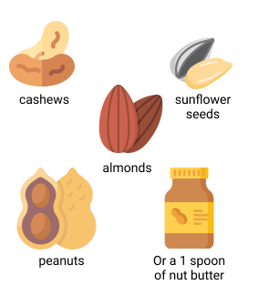
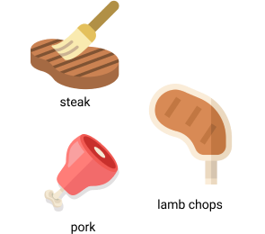
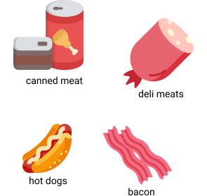
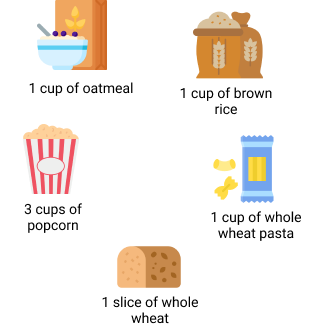
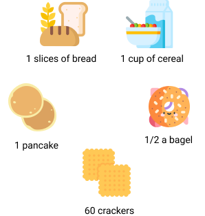

<!doctype html><html lang="en"><head><title>HerHeart</title><meta name="viewport" content="width=device-width"/><meta charset="UTF-8"><script src="https://unpkg.com/jquery"></script><script src="https://unpkg.com/survey-jquery@1.9.8/survey.jquery.min.js"></script><link href="https://unpkg.com/survey-core@1.9.8/modern.min.css" rel="stylesheet"/><script src="https://unpkg.com/nouislider@9.2.0/distribute/nouislider.js"></script><script src="https://unpkg.com/wnumb@1.1.0"></script><link href="https://unpkg.com/nouislider@9.2.0/distribute/nouislider.min.css" rel="stylesheet"/><link rel="preconnect" href="https://fonts.googleapis.com"><link rel="preconnect" href="https://fonts.gstatic.com" crossorigin><link href="https://fonts.googleapis.com/css2?family=Comic+Neue:wght@300;400&display=swap" rel="stylesheet"><script src="https://unpkg.com/surveyjs-widgets@1.9.8/surveyjs-widgets.min.js"></script><script async src="https://www.tiktok.com/embed.js"></script><script src="https://cdn.jsdelivr.net/npm/p5@1.4.1/lib/p5.js"></script><script>!function(n,t,e,i,c){var a,o,d,s,r;for((c=n[i]=n[i]||{})._q=c._q||[],o=0,d=(a=["initialize","identify","updateOptions","pageLoad","track"]).length;o<d;++o)!function(n){c[n]=c[n]||function(){c._q[n===a[0]?"unshift":"push"]([n].concat([].slice.call(arguments,0)))}}(a[o]);(s=t.createElement(e)).async=!0,s.src="https://cdn.pendo.io/agent/static/0fbbcd9f-9784-4cd9-5cc2-356ca53ac8b8/pendo.js",(r=t.getElementsByTagName(e)[0]).parentNode.insertBefore(s,r)}(window,document,"script","pendo"),pendo.initialize({visitor:{id:"Morgan"},account:{id:"Morgan"}})</script><script defer="defer" src="/static/js/main.57129980.js"></script><link href="/static/css/main.073c9b0a.css" rel="stylesheet"></head><body><div id="surveyElement" style="display:inline-block;width:100%"></div><div id="surveyResult"></div><div class="modal-body"><p></p><div id="questionDescriptionText"></div><p></p></div><script>function showDescription(e){document.getElementById("questionDescriptionText").innerHTML=e.popupdescription,$("#questionDescriptionPopup").modal()}var newAnimation,oldAnimation;Survey.Serializer.addProperty("page","animated:text"),Survey.Serializer.addProperty("page","popupdescription:text"),Survey.Serializer.addProperty("page","pos:number");var animationValues=new Array(9),animationValuesHealthy=new Array(9),goodFeedbackResponse=["empty","Yea! That's the exercise you need every week!","Yaaa fruits and veggies make your heart healthy!","Yea nuts are awesome, they impact your health in such a beneficial way!!","","","Keep 'em grains coming!","This is great! See how much NOT smoking has helped your score, smoking is a HUGE factor in your heart health"],mediumFeedbackResponse=["empty","","","Nuts are great! They can help your heart even more than fruit","","","","As you can probably guess, smoking is not too good for your heart, but because you stopped it means your heart is healing!"],badFeedbackResponse=["empty","","","Nuts are great! They can help your heart even more than fruit at times","Eehhh that much soda is not good for your heart!","Uuuhh a lot of red meat! Too much meat is actually bad for your heart...","","","Smoking any nicotine is one of the biggest factors in reducing your risk of cardiac disease! You know that 60% of teenagers your age don't smoke, if your group of friends smokes you could try to use non-nicotine products for example!"],rawSport=0,rawFruits=0,rawNuts=0,rawSoda=0,rawGrains=0,rawMeat=0,rawSmoke=0,rawAlcohol=0;const json={title:"HerHeart-StudyVersion",showProgressBar:"top",goNextPageAutomatic:!0,pages:[{elements:[{type:"html",name:"Intro",html:"<h2 style='text-align:center'> Tell us what you eat every week and we'll tell you how healthy your heart is</h2><br><br><p><b>Press Next to begin this quiz.</b></p>"},{name:"ID",type:"text",title:"Please enter your study ID:",placeHolder:"For example, 8",isRequired:!0,autoComplete:"name"}]},{popupdescription:"P5",pos:1,elements:[{type:"html",name:"test",html:"<div id='sketch-holder'></div>"},{type:"radiogroup",name:"activity-hard",title:"During a typical week how often do you practice any physical activity where you breathe hard/sweat?",isRequired:!0,colCount:0,hasNone:!1,choices:["< 15 mins","15 - 30 mins","30 - 60 mins","1 - 3 hrs","3 - 6 hrs","6 - 10 hrs","10+ hrs"]}]},{popupdescription:"P5",pos:1,elements:[{type:"html",name:"test",html:"<div id='sketch-holder'></div>"},{type:"radiogroup",name:"activity-mod",title:"Okay that's great! And how often do you practice any physical activity where you exert some effort?",isRequired:!0,colCount:0,hasNone:!1,choices:["< 15 mins","15 - 30 mins","30 - 60 mins","1 - 3 hrs","3 - 6 hrs","6 - 10 hrs","10+ hrs"]}]},{popupdescription:"P5",animated:"yes",pos:1,elements:[{type:"html",name:"activity-score",html:"<div id='sketch-holder'></div><h3 style='text-align:center'>Yea! That's the exercise you need every week!</h3>"}]},{popupdescription:"P5",pos:2,elements:[{type:"html",name:"test",html:"<div id='sketch-holder'></div>"},{type:"radiogroup",name:"fruits",title:"During a typical week how often do you have one piece of fruit?",isRequired:!0,colCount:0,hasNone:!1,choices:["Never","Less than once a week","Once or twice a week","Three to five times a week","Everyday","Twice a day","More than twice a day"]}]},{popupdescription:"P5",pos:2,elements:[{type:"html",name:"test",html:"<div id='sketch-holder'></div>"},{type:"radiogroup",name:"vegetables",title:"Fruit is great! And what about veggies?",isRequired:!0,colCount:0,hasNone:!1,choices:["Never","Less than once a week","Once or twice a week","Three to five times a week","Everyday","Twice a day","More than twice a day"]}]},{popupdescription:"P5",animated:"yes",pos:2,elements:[{type:"html",name:"fruit-score",html:"<div id='sketch-holder'></div><h3 style='text-align:center'>Yaaa fruits and veggies make your heart healthy!</h3>"}]},{popupdescription:"P5",pos:3,elements:[{type:"html",name:"test",html:"<div id='sketch-holder'></div>"},{type:"radiogroup",name:"nuts",title:"During a typical week how often do you eat a handful of nuts?",isRequired:!0,colCount:0,hasNone:!1,choices:["Never","Less than once a week","Once or twice a week","Three to five times a week","Everyday","Twice a day","More than twice a day"]}]},{popupdescription:"P5",animated:"yes",pos:3,elements:[{type:"html",name:"nut-score",html:"<div id='sketch-holder'></div><h3 style='text-align:center'>Yea nuts are awesome!!</h3>"}]},{popupdescription:"P5",pos:4,elements:[{type:"html",name:"test",html:"<div id='sketch-holder'></div>"},{type:"radiogroup",name:"sugar",title:"During a typical week how often do you have 1 can/bottle of soda?",isRequired:!0,colCount:0,hasNone:!1,choices:["Never","Less than once a week","Once or twice a week","Three to five times a week","Everyday","Twice a day","More than twice a day"]}]},{popupdescription:"P5",animated:"yes",pos:4,elements:[{type:"html",name:"soda-score",html:"<div id='sketch-holder'></div><h3 style='text-align:center'>Eehhh that much soda is not good for your heart!</h3>"}]},{popupdescription:"P5",pos:5,elements:[{type:"html",name:"test",html:"<div id='sketch-holder'></div>"},{type:"radiogroup",name:"meat",title:"During a typical week how often do you eat RED meat? (Red meat includes beef, pork, lamb, goat)",isRequired:!0,colCount:0,hasNone:!1,choices:["Never","Less than once a week","Once or twice a week","Three to five times a week","Everyday","Twice a day","More than twice a day"]}]},{popupdescription:"P5",pos:5,elements:[{type:"html",name:"test",html:"<div id='sketch-holder'></div>"},{type:"radiogroup",name:"meatproc",title:"And how much processed meat do you eat a week? (Processed meat also include deli meats like chicken)?",isRequired:!0,colCount:0,hasNone:!1,choices:["Never","Less than once a week","Once or twice a week","Three to five times a week","Everyday","Twice a day","More than twice a day"]}]},{popupdescription:"P5",animated:"yes",pos:5,elements:[{type:"html",name:"meat-score",html:"<div id='sketch-holder'></div><h3 style='text-align:center'>Uuuhh a lot of red meat! Too much meat is actually bad for your heart...</h3>"}]},{popupdescription:"P5",pos:6,elements:[{type:"html",name:"test",html:"<div id='sketch-holder'></div>"},{type:"radiogroup",name:"grains-high",title:"During a typical week how often do you have high fiber grains such as these?",isRequired:!0,colCount:0,hasNone:!1,choices:["Never","Less than once a week","Once or twice a week","Three to five times a week","Everyday","Twice a day","More than twice a day"]}]},{popupdescription:"P5",pos:6,elements:[{type:"html",name:"test",html:"<div id='sketch-holder'></div><div id='sketch-holder'></div>"},{type:"radiogroup",name:"grains-low",title:"Got it, and how about low fiber grains such as these?",isRequired:!0,colCount:0,hasNone:!1,choices:["Never","Less than once a week","Once or twice a week","Three to five times a week","Everyday","Twice a day","More than twice a day"]}]},{popupdescription:"P5",animated:"yes",pos:6,elements:[{type:"html",name:"grain-score",html:"<div id='sketch-holder'></div><h3 style='text-align:center'>Keep 'em grains coming!</h3>"}]},{popupdescription:"P5",pos:7,elements:[{type:"html",name:"test",html:"<div id='sketch-holder'></div><div id='sketch-holder'></div>"},{type:"radiogroup",name:"smoke",title:"Do you smoke cigarrettes, use smokeless tobacco, or vape pens containing nicotine?",isRequired:!0,colCount:0,hasNone:!1,choices:["Never smoked","Used to smoke","Currently smoke"]}]},{popupdescription:"P5",animated:"yes",pos:7,elements:[{type:"html",name:"smoke-score",html:"<div id='sketch-holder'></div><h3 style='text-align:center'>As you can probably guess, smoking is not too good for your heart, but because you stopped it means your heart is healing!</h3>"}]},{elements:[{name:"age",type:"text",inputType:"number",title:"Alright, now easy ones. How old are you?",placeholder:"15",isRequired:!0}]},{popupdescription:"P5",pos:8,elements:[{type:"html",name:"test",html:"<div id='sketch-holder'></div>",visibleIf:"{age}>=21"},{type:"radiogroup",name:"alcohol",title:"Oh! You are 21+, let me ask you then, how often do you drink one glass of alcohol? One glass = 4 ounces of wine, 12 ounces of beer",visibleIf:"{age}>=21",isRequired:!0,colCount:0,hasNone:!1,choices:["Never","Less than once a week","Once or twice a week","Three to five times a week","Everyday","Twice a day","More than twice a day"]}]},{popupdescription:"P5",animated:"yes",pos:8,elements:[{type:"html",name:"test",html:"<div id='sketch-holder'></div><h3 style='text-align:center'>Gotcha! You may know this but one glass of wine a day is actually beneficial to your heart health, just one though 👀</h3>",visibleIf:"{age}>=21"}]},{elements:[{type:"radiogroup",name:"gender",title:"What is your gender?",isRequired:!0,colCount:0,hasNone:!1,choices:["Female","Male","Transgender female","Transgender male","Non-gender binary"]}]},{elements:[{name:"weight",type:"text",inputType:"number",placeholder:"130",title:"How much do you weigh? (in pounds)",isRequired:!0}]},{elements:[{type:"html",name:"Height",html:"<p><b>How tall are you?</b></p>"},{name:"height-feet",type:"text",inputType:"number",placeholder:"4",title:"Feet",isRequired:!0},{name:"height-inches",type:"text",inputType:"number",placeholder:"7",title:"Inches",isRequired:!0}]},{elements:[{type:"html",name:"pre-summary",html:"<div><center><h3 style='margin:auto;'>You are done! Tap Next to see your score</h3></center></div>"}]},{popupdescription:"P5",pos:8,elements:[{type:"html",name:"summary",html:"<div style=' border-radius: 25px; padding: 20px; background-image: linear-gradient(0deg,  rgb(231, 206, 61),rgb(211, 159, 16));width:75%; margin:auto;'><center><p style='margin:auto;'>Your risk is <h3></h3>Compared to a healthy lifestyle</p></center></div>"}]},{elements:[{type:"html",name:"good-foods",html:""}]},{elements:[{type:"html",name:"bad-foods",html:""}]},{elements:[{type:"html",name:"activities",html:""}]},{elements:[{type:"html",name:"smokinghabits",html:"",visibleIf:"{smoke}!='Never smoke'"}]}]};Survey.StylesManager.applyTheme("modern"),window.survey=new Survey.Model(json),survey.onComplete.add((function(e){document.querySelector("#surveyResult").textContent="Result JSON:\n"+JSON.stringify(e.data,null,3)})),$("#surveyElement").Survey({model:survey}),survey.onAfterRenderPage.add((function(e,t){if(t.page.popupdescription)if(animationValues[1]=rawSport>=3.5?20:parseInt(20*rawSport/3.5),animationValues[2]=rawFruits>=2?animationValues[1]+20:animationValues[1]+parseInt(10*rawFruits),animationValues[3]=rawNuts>=2?animationValues[2]+40:rawNuts>=.3?animationValues[2]+20:animationValues[2]+parseInt(20*rawNuts/.5),animationValues[4]=rawSoda>1?animationValues[3]:animationValues[3]+(20-parseInt(20*rawSoda)),animationValues[5]=rawMeat>2?animationValues[4]:animationValues[4]+(20-parseInt(20*rawMeat/2)),animationValues[6]=animationValues[5]+parseInt(20*rawGrains/4),animationValues[7]=animationValues[6]+60-60*rawSmoke,animationValues[8]=1==rawAlcohol?animationValues[7]+20:rawAlcohol>1?animationValues[7]+20-parseInt(20*rawAlcohol/3):animationValues[7]+parseInt(20*rawAlcohol),animationValues[0]=0,animationValuesHealthy=[0,20,20,40,20,20,20,60,20],t.page.animated){var a;null!=oldAnimation&&oldAnimation.remove(),animationValues[t.page.pos]-animationValues[t.page.pos-1]>.8*animationValuesHealthy[t.page.pos]?(a="green",n(goodFeedbackResponse[t.page.pos])):animationValues[t.page.pos]-animationValues[t.page.pos-1]>=.3*animationValuesHealthy[t.page.pos]?(a="yellow",n(mediumFeedbackResponse[t.page.pos])):animationValues[t.page.pos]-animationValues[t.page.pos-1]<.3*animationValuesHealthy[t.page.pos]&&(a="red",n(badFeedbackResponse[t.page.pos]));var i=s(1.35*animationValues[t.page.pos-1],1.35*animationValues[t.page.pos],5*(animationValues[t.page.pos]-animationValues[t.page.pos-1]),5*animationValues[t.page.pos],a,5*animationValuesHealthy[t.page.pos],1);newAnimation=new p5(i),window.sketchInstance=newAnimation}else{null!=newAnimation&&newAnimation.remove();var o=s(1.35*animationValues[t.page.pos-1],0,5*(animationValues[t.page.pos]-animationValues[t.page.pos-1]),5*animationValues[t.page.pos-1],"none",0,0);oldAnimation=new p5(o),window.sketchInstance=oldAnimation}function s(e,t,a,i,o,s,n){return function(r){let l,h,d,m,c,p,u,y;var g,w,v;let f,k,b,x;r.preload=function(){h=r.loadImage("img/scorebar-full.png"),l=r.loadImage("img/scorebar-empty.png"),f=r.loadFont("assets/PartyConfettiRegular-eZOn3.ttf")},r.setup=function(){let a;a=1==n?r.createCanvas(350,300):r.createCanvas(350,100),a.parent("sketch-holder"),r.image(h,60,20),r.image(l,60,20),c=e,m=t,d=c-.5,p=parseInt(m/1.35*5-c/1.35*5),u=Math.round(p/(m-c)),y=0,console.log("What is max",m),console.log("what is min",c),console.log("whatis jfac",u),console.log("what is j",p),v=0,r.textFont(f),r.textAlign(r.CENTER,r.CENTER),"red"==o?(k=r.color(190,107,60),b=[190,107,60]):"yellow"==o?(k=r.color(188,164,34),b=[168,164,34]):"green"==o?(k=r.color(60,190,175),b=[60,190,175]):k=r.color(0,0,0),x=new T(r.createVector(r.width/2,100))},r.draw=function(){1==n?r.fillBar():r.staticBar(),r.textAlign(r.RIGHT),r.drawWords(.1*r.width)},r.fillBar=function(){d<m?(r.background(255),r.image(l,60,20),r.copy(h,0,0,d,40,60,20,d,40),d+=1,p-=u,x.addParticle(),x.run()):(r.drawScore(),p=0)},r.staticBar=function(){0==v&&(d<=c?r.copy(h,0,0,d,40,60,20,d,40):v=1,d+=.5)},r.drawWords=function(e){r.fill(0),r.textSize(20),1==n?r.text(i-p,40,30):r.text(i,40,30),r.text("Your Score",99,10)},r.drawScore=function(){r.background(255),r.image(l,60,20),x.addParticle(),x.run(),r.copy(h,0,0,d,40,60,20,d,40),r.fill(k),r.textSize(40),r.text("+"+a,160,100),r.text("/",180,105),r.text(s,240,110)},r.wait=function(e){g=r.millis();do{w=r.millis()}while(w<g+e)};let N=function(e){this.acceleration=r.createVector(0,.05),this.velocity=r.createVector(r.random(-5,5),r.random(-5,5)),this.position=e.copy(),this.lifespan=155};N.prototype.run=function(){this.update(),this.display()},N.prototype.update=function(){this.velocity.add(this.acceleration),this.position.add(this.velocity),this.lifespan-=2},N.prototype.display=function(){r.stroke(200,this.lifespan),r.strokeWeight(2),r.fill(b[0],b[1],b[2],2*this.lifespan),r.ellipse(this.position.x,this.position.y,12,12)},N.prototype.isDead=function(){return console.log("Does this fire?"),this.lifespan<0};let T=function(e){this.origin=e.copy(),this.particles=[]};T.prototype.addParticle=function(){d<m&&this.particles.push(new N(this.origin))},T.prototype.run=function(){for(let e=this.particles.length-1;e>=0;e--){let t=this.particles[e];t.run(),t.isDead()&&this.particles.splice(e,1)}}}}function n(t){e.getQuestionByName("activity-score").html="<div id='sketch-holder'></div><h3 style='text-align:center'>"+t+"</h3>",e.getQuestionByName("fruit-score").html="<div id='sketch-holder'></div><h3 style='text-align:center'>"+t+"</h3>",e.getQuestionByName("nut-score").html="<div id='sketch-holder'></div><h3 style='text-align:center'>"+t+"</h3>",e.getQuestionByName("soda-score").html="<div id='sketch-holder'></div><h3 style='text-align:center'>"+t+"</h3>",e.getQuestionByName("meat-score").html="<div id='sketch-holder'></div><h3 style='text-align:center'>"+t+"</h3>",e.getQuestionByName("grain-score").html="<div id='sketch-holder'></div><h3 style='text-align:center'>"+t+"</h3>",e.getQuestionByName("smoke-score").html="<div id='sketch-holder'></div><h3 style='text-align:center'>"+t+"</h3>"}})),survey.onValueChanged.add((function(e,t){e.getQuestionByName("Intro").html="<div id='myHeart'></div><h2> Tell us what you eat every week and we'll tell you how healthy your heart is</h2><main></main><br><p>Not smoking, a healthy weight, a nutritious diet, and daily exercise play important roles in the prevention of cardiovascular disease. In fact, an overall healthy lifestyle may prevent more than 75% of deaths due to cardiovascular disease. Take this quiz to evaluate how your current lifestyle habits affect your cardiovascular health, and discover simple steps you can take to incorporate a Heart Healthy lifestyle into everyday living. Knowledge is power. Take the first step towards protecting your heart and your health!</p><br><p><b>Press Next to begin this quiz.</b></p>";var a=e.getQuestionByName("age").value,o=e.getQuestionByName("gender").value,s=e.getQuestionByName("weight").value,n=e.getQuestionByName("height-feet").value,r=e.getQuestionByName("height-inches").value,l=s/(12*n+r)/(12*n+r)*703,h=e.getQuestionByName("smoke").value,d=e.getQuestionByName("alcohol").value,m=e.getQuestionByName("fruits").value,c=e.getQuestionByName("vegetables").value,p=e.getQuestionByName("nuts").value,u=e.getQuestionByName("grains-high").value,y=e.getQuestionByName("grains-low").value,g=e.getQuestionByName("sugar").value,w=e.getQuestionByName("meat").value,v=0,f=0,k=0,b=0,x=0,N=0,T=0,V=0,S=[m,c,p,g,w,e.getQuestionByName("meatproc").value,u,y,d],B=[0,0,0,0,0,0,0,0,0];for(console.log(S),i=0;i<S.length;i++)"More than twice a day"==S[i]?B[i]=3:"Twice a day"==S[i]?B[i]=2:"Everyday"==S[i]?B[i]=1:"Three to five times a week"==S[i]?B[i]=.5:"Once or twice a week"==S[i]?B[i]=.3:"Less than once a week"==S[i]?B[i]=.1:"Never"==S[i]&&(B[i]=0);rawFruits=B[0]+B[1],rawNuts=B[2],rawSoda=B[3],rawMeat=B[4]+B[5],rawGrains=B[6]+B[7]/3,rawAlcohol=B[8],"Used to smoke"==h?(T=.15285,rawSmoke=.5):"Currently smoke"==h?(T=.90138,rawSmoke=1):rawSmoke=0,"More than twice a day"==d?V=.5769-.36:"Twice a day"==d?V=.2246:"Everyday"==d?V=.1523:"Three to five times a week"==d&&(V=.08615);("More than twice a day"==m||"More than twice a day"==c||"Everyday"==m&&"Everyday"==c)&&(v=.18283);"Three to five times a week"==p||"Everyday"==p||"Once or twice a week"==p?f=.14522:"More than twice a day"!=p&&"Twice a day"!=p||(f=.24444),"More than twice a day"==u?k=.29934:"Twice a day"==u?k=.19956:"Everyday"==u?k=.09978:"Three to five times a week"==u&&(k=.04989),"More than twice a day"==y?b=.09978:"Twice a day"==y?b=.06652:"Everyday"==y?b=.03326:"Three to five times a week"==y&&(b=.01663),"More than twice a day"==g?x=.43893:"Twice a day"==g?x=.29262:"Everyday"==g?x=.14631:"Three to five times a week"==g&&(x=.073155),"More than twice a day"==w?N=.15624*3:"Twice a day"==w?N=.31248:"Everyday"==w?N=.15624:"Three to five times a week"==w&&(N=.07812);var P=v+f-x-N+k+b,R=e.getQuestionByName("activity-hard").value,F=0;"< 15 mins"==R?F=.25:"15 - 30 mins"==R?F=.5:"30 - 60 mins"==R?F=1:"1 - 3 hrs"==R?F=2:"3 - 6 hrs"==R?F=4.5:"6 - 10 hrs"==R?F=8:"10+ hrs"==R&&(F=10);var M=e.getQuestionByName("activity-mod").value,Q=0;"< 15 mins"==M?Q=.25:"15 - 30 mins"==M?Q=.5:"30 - 60 mins"==M?Q=1:"1 - 3 hrs"==M?Q=2:"3 - 6 hrs"==M?Q=4.5:"6 - 10 hrs"==M?Q=8:"10+ hrs"==M&&(Q=10),rawSport=Q+F;var A=0,C=0;"Female"==o?(A=.1082*a+.04676*l+T-V-10*P*.05113-.02951*(F+Q),C=100*(1-Math.pow(.966,Math.exp(A-6.57301)))):A="We not doing boys yet";var E=C/(100*(1-Math.pow(.966,Math.exp(.04676*l-.557385+.1082*a-6.57301)))),I=(e.getQuestionByName("summary"),"");E<=1?(I="Looking good!","rgb(0, 178, 29),rgb(160, 241, 96))"):E>1&&E<4?(I="Slightly elevated","rgb(231, 206, 61),rgb(211, 159, 16))"):(I="Very High","rgb(178, 32, 0),rgb(241, 96, 96))"),(36*T/.18283).toFixed(0)>30||(36*T/.18283).toFixed(0)>0&&(36*T/.18283).toFixed(0);e.getQuestionByName("summary").html="<div id='sketch-holder'></div><div><center><center><p style='margin:auto; font-size: 27; font-family: Comic Neue, cursive;'>Your predicted risk of Cardiac disease is ...</p><br></p></center><p></p><h3>"+I+"</h3></center><br></div>";var q=["./img/vhealthy-graph.png","./img/healthy-graph.png","./img/unhealthy-graph.png","./img/vunhealthy-graph.png","./img/vvunhealthy-graph.png"],H=0;H=0==(1e3*(v+f+k+b)/5).toFixed(0)?2:1,e.getQuestionByName("good-foods").html="<h3>Let's look at your diet :</h3> <ul> <li><div> <p>Fruits & Veggies: <span style='color: green;  font-weight: bold;' class='text-orientation-right-css'> +"+(1e3*v/5).toFixed(0)+"</span></p></div></li><li><div><p>Nuts: <span style='color:green;  font-weight: bold;' class='text-orientation-right-css'> + "+(1e3*f/5).toFixed(0)+"</span></p></div></li><li><div><p>High fiber grains: <span style='color:green; font-weight: bold;' class='text-orientation-right-css'> + "+(1e3*k/5).toFixed(0)+"</span></p></div></li><li><div><p>Low fiber grains: <span style='color:green; font-weight: bold;' class='text-orientation-right-css'> + "+(1e3*b/5).toFixed(0)+"</span></p></div></li><br><center><p>This is how healthy foods affect your score</p><br><p></p></center>",0!=(1e3*(x+N)/5).toFixed(0)&&(H+=1),e.getQuestionByName("bad-foods").html="<h3>Let's look at your diet :</h3> <ul> <li><div> <p>Sugary drinks: <span style='color: red;  font-weight: bold;' class='text-orientation-right-css'> - "+(1e3*x/5).toFixed(0)+"</span></p><p>(You drink soda <b>"+g+"</b>, the max should be once or twice a week)</p></div></li><li><div><p>Meat: <span style='color:red;  font-weight: bold;' class='text-orientation-right-css'> - "+(1e3*N/5).toFixed(0)+"</span></p><p>(You eat meat <b>"+w+"</b>, the max should be once or twice a week)</p></div></li><br><center><p>Watch meat and soda affect your score, did it have a big impact?</p><br><p></p></center>",0!=(6*(Q+F)).toFixed(0)?H-=1:H+=1,e.getQuestionByName("activities").html="<h3>Let's look at your exercise :</h3> <ul> <li><div> <p>Activities: <span style='color: green;  font-weight: bold;' class='text-orientation-right-css'> + "+(6*(Q+F)).toFixed(0)+" </span></p></div></li><br><center><p>Sports have a big effect don't they? The more exercise the bigger the impact</p><br><p></p></center>","Used to smoke"==h?H+=1:"Currently smoke"==h&&(H+=2),e.getQuestionByName("smokinghabits").html="<h3>Let's look at your smoking habits :</h3> <ul> <li><div> <p> You "+h+": <span style='color: red;  font-weight: bold;' class='text-orientation-right-css'> - "+(36*T/.18283).toFixed(0)+"</span></p></div></li><p> Any smoking significantly affects your heart health, it's -30 if you used to smoke and -177 if you currently do!</p><br><center><p>Smoking has a huge impact in your heart score. Hopefully you didn't see it come down!</p><br><p></p></center>"}))</script></body></html>